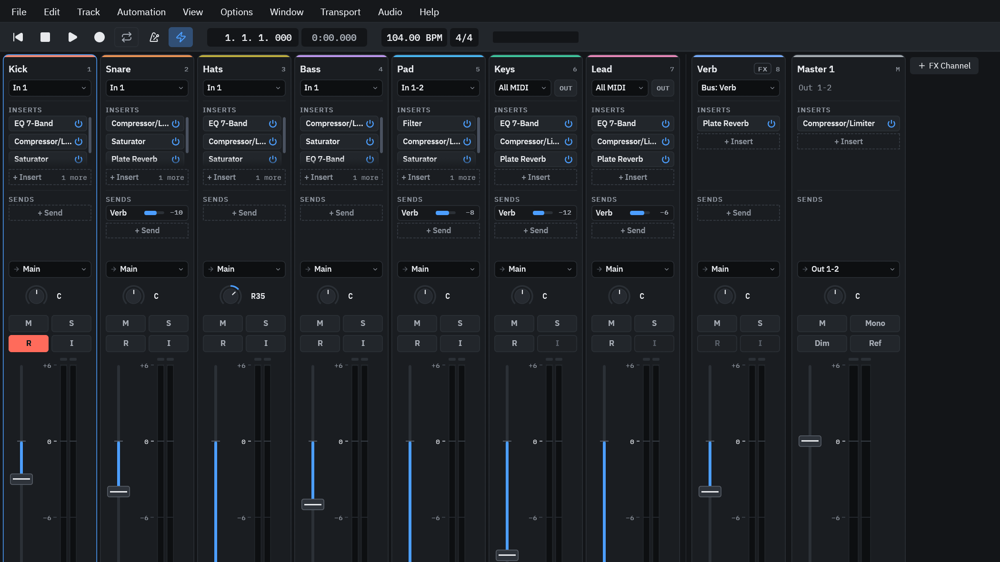
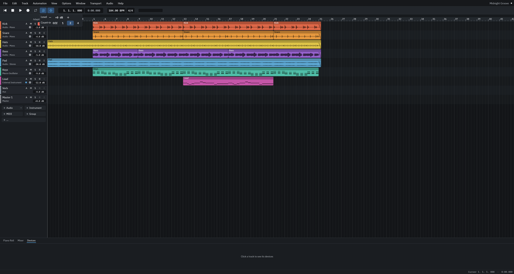
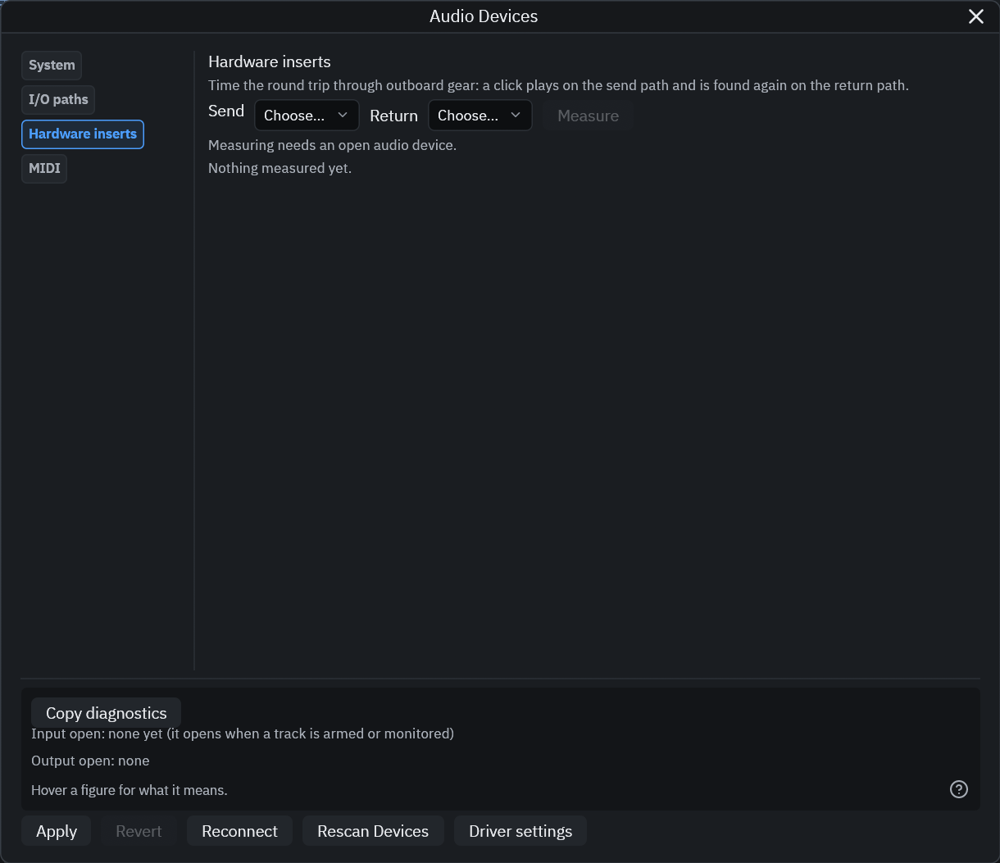
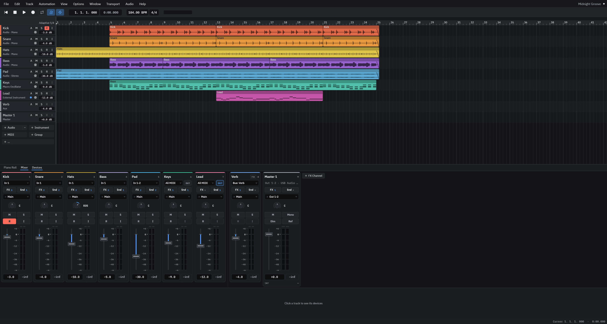
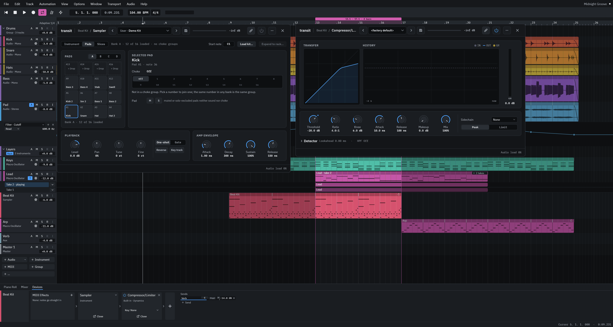
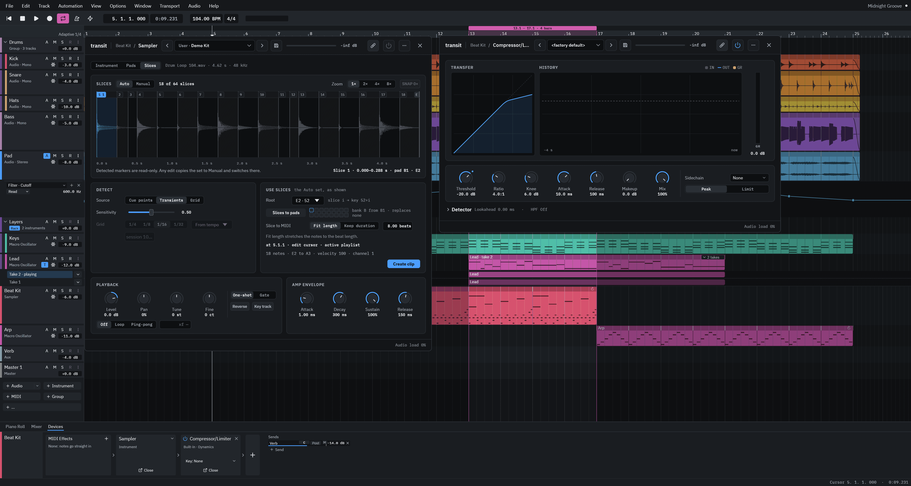
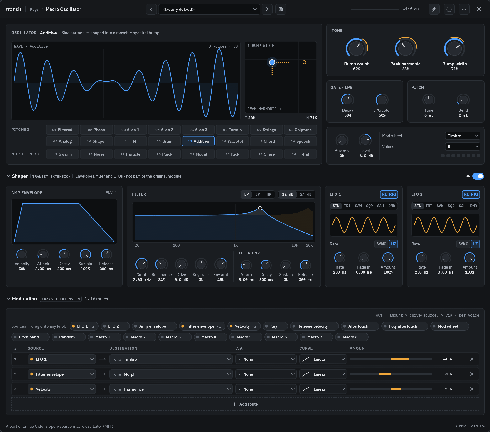
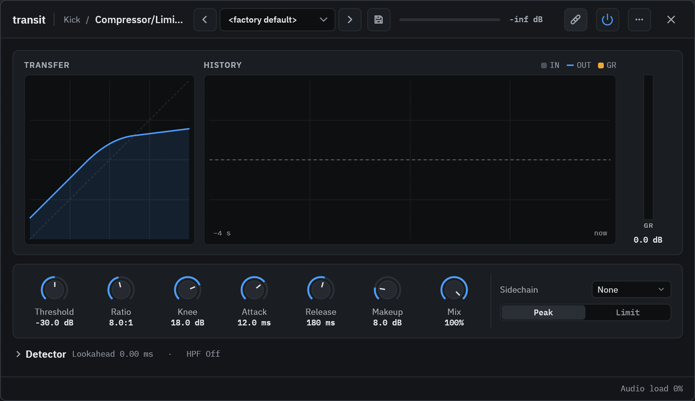
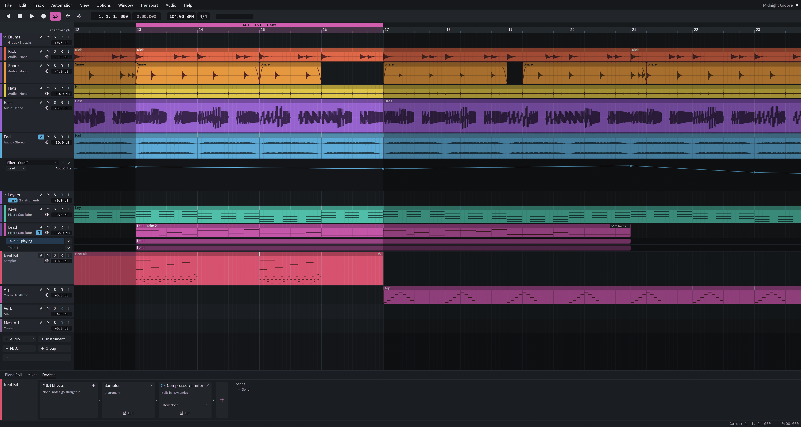

Windows
This looks like your computerPick the installer. If you would rather not install anything, the zip runs from any folder.
Download for WindowsOther formats: see the release page

A free, open-source DAW for recording and playing live, on Windows, Mac and Linux. Latency settings are chosen from measurements on real audio interfaces, and the numbers are public.
Alpha. Current release: v0.7.2. Early software that changes every week: back up what you care about, and see the known issues.

One click on Low Latency mode bypasses the slowest inserts on the tracks you are recording and monitoring. Turn it off and your mix is back as it was.

Notes you play during the count-in land in the take as pickups. One known limit: at the very start of a session, a note released before bar 1 is left out and the status line says so (known issues).


Hardware inserts measure their own round trip with a click train and delay compensation uses the result. External Instrument sends MIDI out and brings the audio back on the input you pick.


Pads, Slices and Instrument views on one instrument: load a kit from a folder, cut a loop at its transients, and play it from your pads.


Built-in synths ported from Émilie Gillet’s MIT-licensed firmware and tested against the original code, in a design language made for reading at a glance.

Mixer strips render on several cores, and the transport shows the load, buffer and driver at a glance. The measurements behind that default are public.

See every channel of your interface; name your own paths and route anything to them.
Everything below links to a public record. Check it.
transit is free. It is also early software (alpha): it changes every week, and some things are rough or missing. Back up anything you care about, and tell us what breaks on the Discord or in the testing thread.
Loading the latest release...
Pick the installer. If you would rather not install anything, the zip runs from any folder.
Download for WindowsOther formats: see the release page
Pick the DMG (for Macs with an Apple chip). Open it and drag transit to Applications.
Download for MacOther formats: see the release page
The AppImage runs on almost any system. The .deb is for Ubuntu and Debian, the .rpm is for Fedora, and the tar.gz works everywhere else.
Download for LinuxOther formats: see the release page
The downloads are not signed yet, so Windows and macOS may warn you the first time. The README shows how to open it anyway.
First start: open Audio Devices, pick your audio interface, and set the buffer size. transit measures its own latency and shows you the number.
Record a part again and again. Every take stacks up in its own lane, so you choose the one that plays. Bounce in Place turns a track into audio when you are done.
Plays CLAP and VST3 plug-ins. Open their editors in their own windows.
The Sampler holds a whole kit with three views: pads to play, slices to cut a loop at its hits, and key zones with velocity layers. Save a kit and load it again with one click.
Comes with synths such as the Macro Oscillator, Resonator and Modal Voice, plus compressor, EQ, reverb and more.
On Windows, transit talks to ASIO and WASAPI directly, and the Audio Devices window shows the delay it measures.
For the curious: how changes get into transit.
We change a setting only after measuring it on real hardware, and we publish the numbers.
When a bug slips through, we write what happened and add a check that catches it.
Every design change gets a short written decision with its evidence, and every change is reviewed by someone trying to break it.
What we know is broken is in the known issues list.




Help wanted: good places to start contributing.